Correlation object cookbook
This is a short demonstration of some of the major tools in the waveform correlation toolbox. The overarching goal of the toolbox is to provide a set of functions for performing routine manipulations on a large set of waveforms (tens to thousands) which may bare some similarity to each other - cross correlation, stacking, grouping, plotting, interferometry etc. Detailed usages can be found for each function with the HELP command. At a minimum, read HELP CORRELATION for the basic architecture of a CORRELATION object. Detailed installation and version notes can be found in GISMO/@correlation/README.txt
Data can be imported to a CORRELATION object from several sources. Primary sources are intended to be Antelope and Winston databases. Since trace handling is carried out with the WAVEFORM toolbox though, any data that can be converted to a WAVEFORM object can be converted to a CORRELATION object, including SAC files. All uses of CORRELATION require that the WAVEFORM toolbox be installed.
[NOTE that the set(gcf,'Position',...) lines used repeatedly below are just for display purposes in this document.]
Contents
- Use traces from the demo dataset
- Load traces from an outside datasource
- How to use a correlation object
- Plot raw data
- Crop, taper, filter traces
- Cross correlate
- Similarity matrix
- Lag matrix
- Realign traces
- hierarchical cluster tree
- Event clusters
- Coverting waveform and correlation objects
- Sign traces
- Stack traces
- Find residual waveform
- Interferogram
- Occurence plot
- Overlay traces
Use traces from the demo dataset
For the purposes of this cookbook example we use the built-in correlation demo dataset of 100 traces drawn from a broadband sensor AU13 at Augustine volcano.
c = correlation('DEMO');
Load traces from an outside datasource
This approach requires that the Antelope toolbox for Matlab be installed. The waveform object must also be installed. Once a list of "trigger times" has been defined (in Matlab date format), reading traces can be accomplished with a single command. Loading a few thousand short traces into a single correlation object is no problem. See HELP DATASOURCE and HELP SCNLOBJECT for a full description of these prerequisite tools.
%>> time_str = [ % '01/11/2006 03:05:14.363' % '01/11/2006 03:06:24.336' % ... % '01/12/2006 06:25:59.710' % '01/12/2006 06:27:23.797' % ]; %>> time_num = datenum(time_str); %>> ds = datasource('antelope','archive'); %>> scnl = scnlobject('sta','chan'); %>> c = correlation(ds,scnl,time_num,-5,10)
How to use a correlation object
List what functions can be used on a CORRELATION object. Display the 7 fields contained with each CORRELATION object.
methods(c) display(c)
Methods for class correlation:
DEP_xcorr clip demean hilbert set verify
adjusttrig cluster detrend integrate sign waveform
agc colormap diff interferogram sort xcorr
align conv display linkage stack
butter correlation find minus strip
cat crop get norm subset
check deconv getstat plot taper
c =
WAVEFORMS: 100x1 vector
TRIG: 100x1 vector
CORR: 0x0 square matrix
LAG: 0x0 square matrix
STAT: 0x0 matrix
LINK: 0x0 matrix
CLUST: 0x0 vector
Plot raw data
Use 'wig' option for a traditional wiggle plot. 'sha' displays shaded traces often useful when viewing more than ~50 traces at a time.
plot(c,'wig'); set(gcf,'Position',[50 50 700 400]);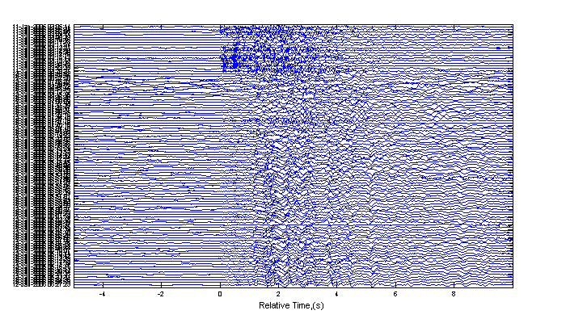
Crop, taper, filter traces
This particular use of crop is unnecessary but it demonstrates cropping the data (in this case on the low end) and zero padding (in this case on the high end.) BUTTER applies a zero-phase Butterworth filter to the data. It is important to at least apply a high pass filter to data before cross-correlating as long period rolls can greatly bias the correlation.
c = crop(c,-4,12); c = taper(c); c = butter(c,[.5 10]);
Cross correlate
Cross correlate waveforms, identifying the maximum correlation value and the relative time offset between each pair of traces to acheive the maximum correlation. For many hundreds of events, this can be a time consuming process. XCORR provides status information along the way.
c = xcorr(c,[0 3.5]);
using 1xr algorithm on the time interval [0 3.5] ...
Similarity matrix
Sort traces by time and plot the correlation matrix - the set of maximum cross-correlation values between each pair of traces. To access the correlation matrix directly, first extract it from the correlation object using the get command.
c = sort(c); plot(c,'corr'); set(gcf,'Position',[50 50 500 400]); corr_matrix = get(c,'CORR'); corr_matrix(1:5,1:5)
ans =
1.0000 0.2866 0.2661 0.4052 0.4086
0.2866 1.0000 0.2542 0.3002 0.2414
0.2661 0.2542 1.0000 0.2856 0.3069
0.4052 0.3002 0.2856 1.0000 0.5840
0.4086 0.2414 0.3069 0.5840 1.0000
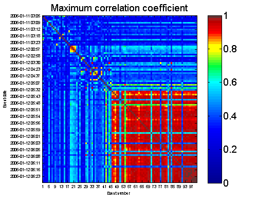 Lag matrix
Similar to above, this function plots the matrix of lag times (in seconds) that yeild the maximum correlation between each pair of traces.
plot(c,'lag'); set(gcf,'Position',[50 50 500 400]); lag_matrix = get(c,'LAG'); lag_matrix(1:5,1:5)
ans =
0 0.8930 0.0490 -0.7620 -0.8570
-0.8930 0 1.8460 -1.4850 0.5800
-0.0490 -1.8460 0 -0.7210 -0.8160
0.7620 1.4850 0.7210 0 -0.0750
0.8570 -0.5800 0.8160 0.0750 0
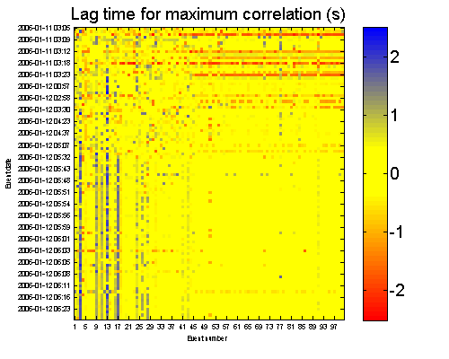 Realign traces
Apply the time corrections in the lag matrix to the trigger times. This will result in highly correlated traces being well aligned. Plot the results as a shaded waveform plot.
c = adjusttrig(c,'MIN',1); plot(c,'sha'); set(gcf,'Position',[50 50 700 400]);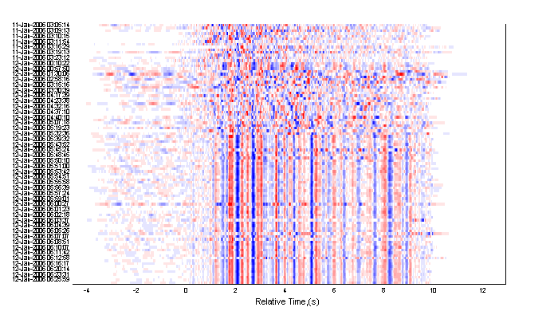
hierarchical cluster tree
Plot a hierarchical cluster tree relationship (denrogram) between traces. Plot reorders traces such that they correspond with the ordering of traces on the cluster tree.
c = linkage(c); plot(c,'den'); close(gcf) set(gcf,'Position',[50 50 600 400]);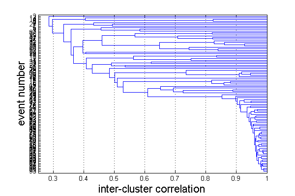
Event clusters
Trim the cluster tree relationship into discrete clusters of events. Subset just the events of the largest cluster.
c = cluster(c,.8); index = find(c,'CLUST',1); c1 = subset(c,index); plot(c1,'wig'); set(gcf,'Position',[50 50 700 400]);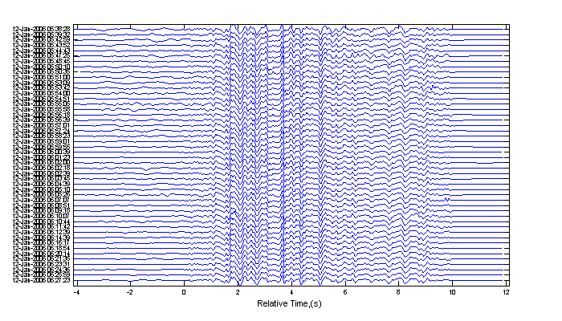
Coverting waveform and correlation objects
Inside the CORRELATION object, waveforms are stored as WAVEFORM objects. It is possible to extract and then reinsert waveforms. This is use for carrying out trace manipulations that do not exist in the CORRELATION toolbox. Be aware if reinserting waveforms that it is possible to manipulate waveforms in ways that may be incompatible with the correlation object, removing waveforms, for example, or altering timestamps.
w = waveform(c1); for n = 1:numel(w) w(n) = w(n).^2 .* sign(w(n)); end c2 = correlation(c1,w);
Sign traces
SIGN effectively removes the ampltiude information from traces. In some cases the can improve correlations in the presence of large amplitude transients.
c2 = sign(c1); plot(c2,'wig',.3); set(gcf,'Position',[50 50 700 400]);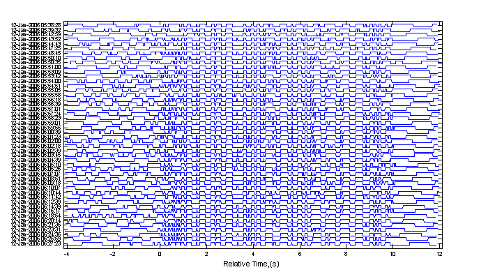
Stack traces
Crop, normalize and stack events. The stack is appended as an additional traces at the bottom. The first NORM call is to ensure that each trace is given equal weight in the stack. The second NORM call is to normalize the new trace stack appended to the end. STACK does not, by default, divide the summation by the number of traces.
c1 = crop(c1,-4,9); c1 = norm(c1); c1 = stack(c1); c1 = norm(c1);
Find residual waveform
Subtract the stacked waveform from all other traces. The final trace is zeroed out because it was subtracted from itself (the stack).
c2 = norm(c1); c2 = minus(c2); plot(c2,'raw',.5) set(gcf,'Position',[50 50 700 400]);
Warning: Traces appear to have very different overall amplitudes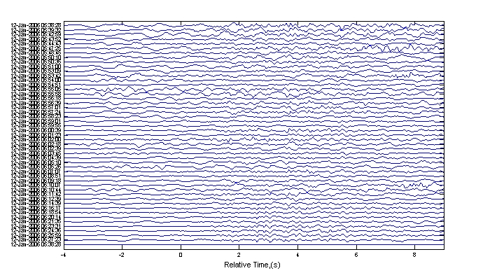
Interferogram
Calculate the correlation and lag values on narrow time windows within each trace relative to a master event. By default, the final trace is used as the master event, which in this case is the trace stack. Both the maximum correlations and the lag times can be plotted behind a wiggle trace plot, or they can be exported as matrices. This can be a computationally intensive routine. Feedback is given to show progress through the calculation. See HELP CORRELATION/PLOT for an explanation of the lag interferogram color scale.
c1 = xcorr(c1,[1 3]); % align traces on the initial wavelet c1 = adjusttrig(c1); % " " c1 = interferogram(c1); plot(c1,'int',1,'corr'); % plot the correlation value interferogram set(gcf,'Position',[50 50 700 400]); plot(c1,'int',1,'lag',.01); % plot the lag value interferogram set(gcf,'Position',[50 50 700 400]);
using 1xr algorithm on the time interval [1 3] ... Data not uniformly aligned around triggers. Consider using CROP function. Time step: 0.260 Window width: 0.650 Reference trace no.: 49 Center of time window: -4.001 ... Center of time window: -1.401 ... Center of time window: 1.199 ... Center of time window: 3.799 ... Center of time window: 6.399 ... Center of time window: 8.999 ...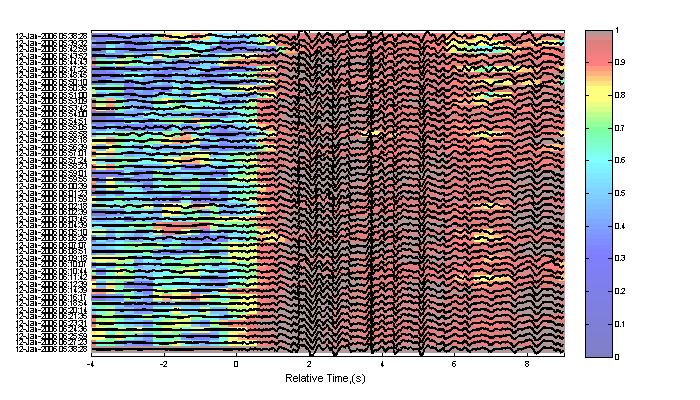 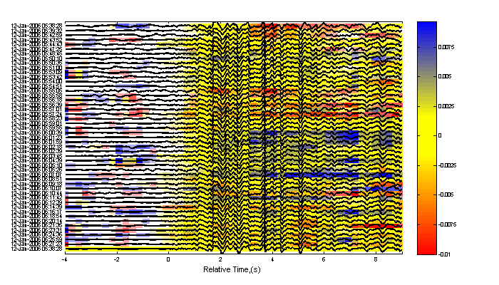
Occurence plot
Display stacked traces for the 10 largest clusters and plot them against the time history of the events.
c = crop(c,-3,10); plot(c,'occurence',1,1:10); set(gcf,'Position',[50 50 700 400]);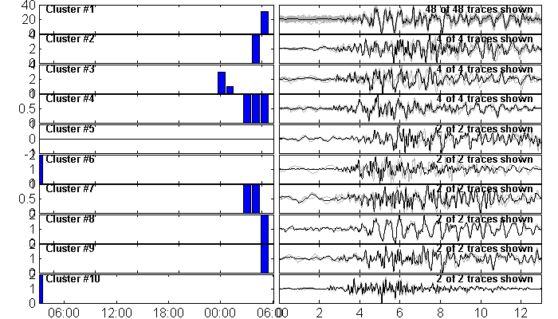
Overlay traces
Plot all traces from the largest cluster together with the stack of the traces.
index = find(c,'CLUST',1); plot(c,'overlay',1,index); set(gcf,'Position',[50 50 700 200]);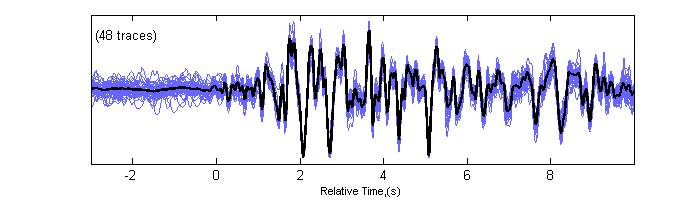